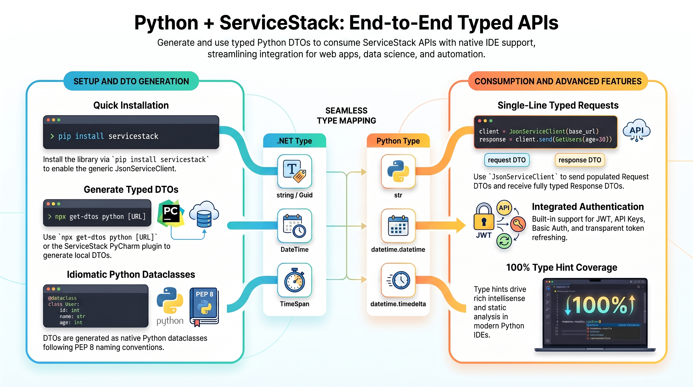
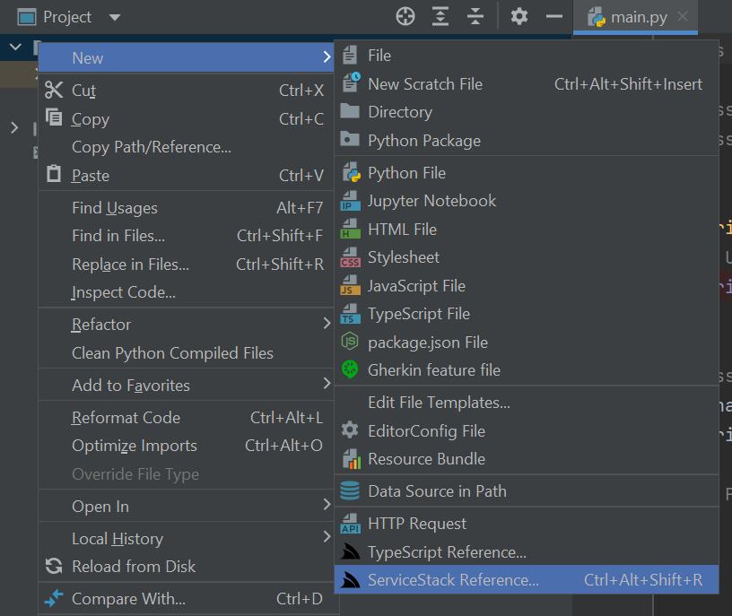
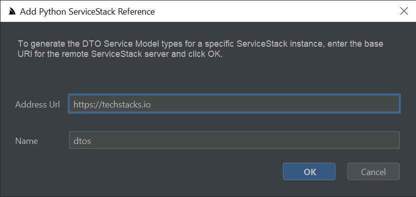
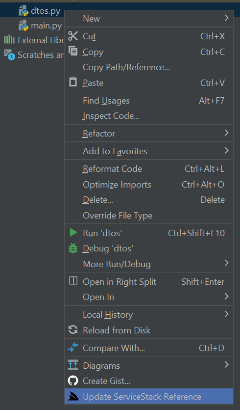

ServiceStack's Add ServiceStack Reference feature allows clients to generate Native Types from directly within PyCharm using ServiceStack IntelliJ Plugin - providing a simple way to give clients typed access to your ServiceStack Services.
Python - Typed APIs for data, scripting and automation
The servicestack package generates dataclass DTOs that follow PEP 8 naming, so they read like Python rather than translated C#, and populate in a single constructor expression:
client = JsonServiceClient(base_url)
response: HelloResponse = client.send(Hello(name="World"))
print(response.result)
That makes it a natural fit for the parts of an organization that live outside the App - data and analytics notebooks, ETL and ML pipelines, DevOps automation and internal tooling - all calling the same authenticated business APIs the product uses, with type hints driving completion in PyCharm and VS Code. Structured errors, authentication, typed AutoQuery, batch and one-way requests and file uploads.
First class development experience
Python is one of the worlds most popular programming languages thanks to its ease of use and comprehensive libraries which sees it excels in many industries from education where it's often the first language taught in school to data science, machine learning and AI where it's often the dominant language used. To maximize the experience for calling ServiceStack APIs within these environments ServiceStack now supports Python as a 1st class Add ServiceStack Reference supported language which gives Python developers an end-to-end typed API for consuming ServiceStack APIs, complete with IDE integration in PyCharm as well as built-in support in the get-dtos script to generate Python DTOs for a remote ServiceStack instance from a single command-line.
Ideal idiomatic Typed Message-based API
To maximize the utility of Python DTOs and enable richer tooling support, Python DTOs are generated as dataclasses with support for JSON serialization and annotated with Python 3 type hints - that's invaluable when scaling large Python code-bases and greatly improves discoverability of a remote API. DTOs are also enriched with interface markers through Python's multiple inheritance support which enables its optimal end-to-end typed API:
The Python DTOs and JsonServiceClient library follow Python's PEP 8's naming conventions so they'll naturally fit into existing Python code bases. Here's a sample of techstacks.io generated Python DTOs containing string and int Enums, an example AutoQuery and a standard Request & Response DTO showcasing the rich typing annotations and naming conventions used:
class TechnologyTier(str, Enum):
PROGRAMMING_LANGUAGE = 'ProgrammingLanguage'
CLIENT = 'Client'
HTTP = 'Http'
SERVER = 'Server'
DATA = 'Data'
SOFTWARE_INFRASTRUCTURE = 'SoftwareInfrastructure'
OPERATING_SYSTEM = 'OperatingSystem'
HARDWARE_INFRASTRUCTURE = 'HardwareInfrastructure'
THIRD_PARTY_SERVICES = 'ThirdPartyServices'
class Frequency(IntEnum):
DAILY = 1
WEEKLY = 7
MONTHLY = 30
QUARTERLY = 90
# @Route("/technology/search")
@dataclass_json(letter_case=LetterCase.CAMEL, undefined=Undefined.EXCLUDE)
@dataclass
class FindTechnologies(QueryDb2[Technology, TechnologyView], IReturn[QueryResponse[TechnologyView]], IGet):
ids: Optional[List[int]] = None
name: Optional[str] = None
vendor_name: Optional[str] = None
name_contains: Optional[str] = None
vendor_name_contains: Optional[str] = None
description_contains: Optional[str] = None
# @Route("/orgs/{Id}", "PUT")
@dataclass_json(letter_case=LetterCase.CAMEL, undefined=Undefined.EXCLUDE)
@dataclass
class UpdateOrganization(IReturn[UpdateOrganizationResponse], IPut):
id: int = 0
slug: Optional[str] = None
name: Optional[str] = None
description: Optional[str] = None
color: Optional[str] = None
text_color: Optional[str] = None
link_color: Optional[str] = None
background_color: Optional[str] = None
background_url: Optional[str] = None
logo_url: Optional[str] = None
hero_url: Optional[str] = None
lang: Optional[str] = None
delete_posts_with_report_count: int = 0
disable_invites: Optional[bool] = None
default_post_type: Optional[str] = None
default_subscription_post_types: Optional[List[str]] = None
post_types: Optional[List[str]] = None
moderator_post_types: Optional[List[str]] = None
technology_ids: Optional[List[int]] = None
@dataclass_json(letter_case=LetterCase.CAMEL, undefined=Undefined.EXCLUDE)
@dataclass
class UpdateOrganizationResponse:
response_status: Optional[ResponseStatus] = None
The smart Python JsonServiceClient available in the servicestack pip and conda packages enabling the same
productive, typed API development experience available in our other 1st-class supported client platforms.
Using dataclasses enables DTOs to be populated using a single constructor expression utilizing named parameters which together with the generic JsonServiceClient enables end-to-end typed API Requests in a single LOC:
from .dtos import *
from servicestack import JsonServiceClient
client = JsonServiceClient("https://test.servicestack.net")
response: HelloResponse = client.get(Hello(name="World"))
INFO
The HelloResponse optional type hint doesn't change runtime behavior but enables static analysis tools and IDEs like PyCharm to provide rich intelli-sense and development time feedback
Installation
The only requirements for Python apps to perform typed API Requests are the generated Python DTOs and the generic JsonServiceClient which can be installed globally or in a virtual Python environment using Python's pip:
pip install servicestack
Or if preferred can be installed with conda:
conda install conda-build.
- Add conda-forge as channel using
conda config --add channels conda-forge - On root directory run
conda build .
PyCharm ServiceStack Plugin
Python developers of PyCharm Professional and FREE Community Edition can get a simplified development experience for consuming ServiceStack Services by installing the ServiceStack Plugin from the JetBrains Marketplace:
Where you'll be able to right-click on a directory and click on ServiceStack Reference on the context menu:

To launch the Add Python ServiceStack Reference dialog where you can enter the remote URL of the ServiceStack endpoint you wish to call to generate the Typed Python DTOs for all APIs which by default will saved to dtos.py:

Then just import the DTOs and JsonServiceClient to be able to consume any of the remote ServiceStack APIs:
from .dtos import *
from servicestack import JsonServiceClient
client = JsonServiceClient("https://techstacks.io")
response = client.send(FindTechnologies(
ids=[1, 2, 4, 6],
vendor_name="Google",
take=10))
If any of the the remote APIs change their DTOs can be updated by right-clicking on dtos.py and clicking Update ServiceStack Reference:

Simple command-line utility for Python
Developers using other Python IDEs and Text Editors like VS Code can generate Python DTOs from the command-line with the cross-platform get-dtos script which can be run with Node.js without needing to install anything:
npx get-dtos
Running it without any arguments displays the available options for adding and updating ServiceStack References.
Adding a ServiceStack Reference
To Add a Python ServiceStack Reference just call npx get-dtos python with the URL of a remote ServiceStack instance:
npx get-dtos python https://techstacks.io
Result:
Saved to: dtos.py
Calling npx get-dtos python with just a URL will save the DTOs using the Host name, you can override this by specifying a FileName as the 2nd argument:
npx get-dtos python https://techstacks.io Tech
Result:
Saved to: Tech.dtos.py
Updating a ServiceStack Reference
To Update an existing ServiceStack Reference, call npx get-dtos python with the Filename:
npx get-dtos python dtos.py
Result:
Updated: dtos.py
Which will update the File with the latest Python Server DTOs from techstacks.io. You can also customize how DTOs are generated by uncommenting the Python DTO Customization Options and updating them again.
Updating all Python DTOs
Calling npx get-dtos python without any arguments will update all Python DTOs in the current directory:
npx get-dtos python
Result:
Updated: Tech.dtos.py
Updated: dtos.py
Smart Generic JsonServiceClient
The generic JsonServiceClient is a 1st class client with the same rich featureset of the smart ServiceClients in other 1st class supported languages sporting a terse, typed flexible API with support for additional untyped params, custom URLs and HTTP Methods, dynamic response types including consuming API responses in raw text and binary data formats. Clients can be decorated to support generic functionality using instance and static Request, Response and Exception Filters.
It includes built-in support for a number of ServiceStack Auth options including HTTP Basic Auth and stateless Bearer Token Auth Providers like API Key and JWT Auth as well as stateful Sessions used by the popular credentials Auth Provider and an on_authentication_required callback for enabling custom authentication methods. The built-in auth options include auto-retry support for transparently authenticating and retrying authentication required requests as well as Refresh Token Cookie support where it will transparently fetch new JWT Bearer Tokens automatically behind-the-scenes for friction-less stateless JWT support.
A snapshot of these above features is captured in the high-level public API below:
class JsonServiceClient:
base_url: str
reply_base_url: str
oneway_base_url: str
headers: Optional[Dict[str, str]]
bearer_token: Optional[str]
refresh_token: Optional[str]
refresh_token_uri: Optional[str]
username: Optional[str]
password: Optional[str]
on_authentication_required: Callable[[], None]
global_request_filter: Callable[[SendContext], None] # static
request_filter: Callable[[SendContext], None]
global_response_filter: Callable[[Response], None] # static
response_filter: Callable[[Response], None]
exception_filter: Callable[[Response, Exception], None]
global_exception_filter: Callable[[Response, Exception], None]
def __init__(self, base_url)
def set_base_path(self, base_path: str = '')
def set_credentials(self, username, password)
def set_bearer_token(self, bearer_token: str)
def set_refresh_token(self, refresh_token: str)
@property def token_cookie(self)
@property def refresh_token_cookie(self)
def get(self, request: IReturn[T], args: Dict[str, Any] = None) -> T
def post(self, request: IReturn[T], body: Any = None, args: Dict[str, Any] = None) -> T
def put(self, request: IReturn[T], body: Any = None, args: Dict[str, Any] = None) -> T
def patch(self, request: IReturn[T], body: Any = None, args: Dict[str, Any] = None) -> T
def delete(self, request: IReturn[T], args: Dict[str, Any] = None) -> T
def options(self, request: IReturn[T], args: Dict[str, Any] = None) -> T
def head(self, request: IReturn[T], args: Dict[str, Any] = None) -> T
def send(self, request, method: Any = None, body: Any = None, args: Dict[str, Any] = None)
def get_url(self, path: str, response_as: Type, args: Dict[str, Any] = None)
def delete_url(self, path: str, response_as: Type, args: Dict[str, Any] = None)
def options_url(self, path: str, response_as: Type, args: Dict[str, Any] = None)
def head_url(self, path: str, response_as: Type, args: Dict[str, Any] = None)
def post_url(self, path: str, body: Any = None, response_as: Type = None, args: Dict[str, Any] = None)
def put_url(self, path: str, body: Any = None, response_as: Type = None, args: Dict[str, Any] = None)
def patch_url(self, path: str, body: Any = None, response_as: Type = None, args: Dict[str, Any] = None)
def send_url(self, path: str, method: str = None, response_as: Type = None, body: Any = None,
args: Dict[str, Any] = None)
def post_file_with_request(self, request: IReturn[T], file: UploadFile) -> T
def post_files_with_request(self, request: IReturn[T], files: List[UploadFile]) -> T
def post_files_with_request_url(self, request_uri: str, request: Any, files: List[UploadFile]) -> T
def send_all(self, request_dtos: List[IReturn[T]]) # Auto Batch Reply Requests
def send_all_oneway(self, request_dtos: list) # Auto Batch Oneway Requests
Change Default Server Configuration
The above defaults are also overridable on the ServiceStack Server by modifying the default config on the NativeTypesFeature Plugin, e.g:
var nativeTypes = this.GetPlugin<NativeTypesFeature>();
nativeTypes.MetadataTypesConfig.AddResponseStatus = true;
...
Python specific functionality can be added by PythonGenerator
PythonGenerator.DefaultImports.Add("requests");
Customize DTO Type generation
Additional Python specific customization can be statically configured like PreTypeFilter, InnerTypeFilter & PostTypeFilter (available in all languages) can be used to inject custom code in the generated DTOs output.
Use the PreTypeFilter to generate source code before and after a Type definition, e.g. this will append the Decorator class decorator on non enum & interface types:
PythonGenerator.PreTypeFilter = (sb, type) => {
if (!type.IsEnum.GetValueOrDefault() && !type.IsInterface.GetValueOrDefault())
{
sb.AppendLine("@Decorator");
}
};
The InnerTypeFilter gets invoked just after the Type Definition which can be used to generate common members for all Types and interfaces, e.g:
PythonGenerator.InnerTypeFilter = (sb, type) => {
sb.AppendLine("id:str = str(random.random())[2:]");
};
There's also PrePropertyFilter & PostPropertyFilter for generating source before and after properties, e.g:
PythonGenerator.PrePropertyFilter = (sb , prop, type) => {
if (prop.Name == "Id")
{
sb.AppendLine("@IsInt");
}
};
Emit custom code
To enable greater flexibility when generating complex Typed DTOs, you can use [Emit{Language}] attributes to generate code before each type or property.
These attributes can be used to generate different attributes or annotations to enable client validation for different validation libraries in different languages, e.g:
[EmitCode(Lang.Python, "# App User")]
[EmitPython("@Validate")]
public class User : IReturn<User>
{
[EmitPython("@IsNotEmpty", "@IsEmail")]
[EmitCode(Lang.Swift | Lang.Dart, new[]{ "@isNotEmpty()", "@isEmail()" })]
public string Email { get; set; }
}
Which will generate [EmitPython] code in Python DTOs:
# App User
@Validate
@dataclass_json(letter_case=LetterCase.CAMEL, undefined=Undefined.EXCLUDE)
@dataclass
class User:
@IsNotEmpty
@IsEmail
email: Optional[str] = None
Whilst the generic [EmitCode] attribute lets you emit the same code in multiple languages with the same syntax.
Python Reference Example
Lets walk through a simple example to see how we can use ServiceStack's Python DTO annotations in our Python JsonServiceClient. Firstly we'll need to add a Python Reference to the remote ServiceStack Service by right-clicking on a project folder and clicking on ServiceStack Reference... (as seen in the above screenshot).
This will import the remote Services dtos into your local project which looks similar to:
""" Options:
Date: 2025-06-04 09:49:40
Version: 8.71
Tip: To override a DTO option, remove "#" prefix before updating
BaseUrl: https://techstacks.io
#GlobalNamespace:
#AddServiceStackTypes: True
#AddResponseStatus: False
#AddImplicitVersion:
#AddDescriptionAsComments: True
#IncludeTypes:
#ExcludeTypes:
#DefaultImports: datetime,decimal,marshmallow.fields:*,servicestack:*,typing:*,dataclasses:dataclass/field,dataclasses_json:dataclass_json/LetterCase/Undefined/config,enum:Enum/IntEnum
#DataClass:
#DataClassJson:
"""
@dataclass_json(letter_case=LetterCase.CAMEL, undefined=Undefined.EXCLUDE)
@dataclass
class GetTechnologyResponse:
created: datetime.datetime = datetime.datetime(1, 1, 1)
technology: Optional[Technology] = None
technology_stacks: Optional[List[TechnologyStack]] = None
response_status: Optional[ResponseStatus] = None
# @Route("/technology/{Slug}")
@dataclass_json(letter_case=LetterCase.CAMEL, undefined=Undefined.EXCLUDE)
@dataclass
class GetTechnology(IReturn[GetTechnologyResponse], IRegisterStats, IGet):
slug: Optional[str] = None
In keeping with idiomatic style of local .py sources, generated types are not wrapped within a module by default. This lets you reference the types you want directly using normal import destructuring syntax:
from .dtos import GetTechnology, GetTechnologyResponse
Or import all Types into your preferred variable namespace with:
from .dtos import *
request = GetTechnology()
Making Typed API Requests
Making API Requests in Python is the same as all other ServiceStack's Service Clients by sending a populated Request DTO using a JsonServiceClient which returns typed Response DTO.
So the only things we need to make any API Request is the JsonServiceClient from the servicestack package and any DTO's we're using from generated Python ServiceStack Reference, e.g:
from .dtos import GetTechnology, GetTechnologyResponse
from servicestack import JsonServiceClient
client = JsonServiceClient("https://techstacks.io")
request = GetTechnology()
request.slug = "ServiceStack"
r: GetTechnologyResponse = client.get(request) # typed to GetTechnologyResponse
tech = r.technology # typed to Technology
print(f"{tech.name} by {tech.vendor_name} ({tech.product_url})")
print(f"`{tech.name} TechStacks: {r.technology_stacks}")
Resolving the HTTP Method
send uses the HTTP Method its API is annotated with, which generated DTOs inherit from their IGet, IPost,
IPut, IPatch, IDelete and IOptions interface markers:
# @Route("/technology/{Slug}")
class GetTechnology(IReturn[GetTechnologyResponse], IGet):
slug: Optional[str] = None
# GET /api/GetTechnology?slug=ServiceStack
r: GetTechnologyResponse = client.send(GetTechnology(slug="ServiceStack"))
Request DTOs that aren't annotated with a Verb default to POST, which can be overridden per Request by using the
explicit get, post, put, patch, delete, head and options methods:
client.get(SendReturnVoid(id=1)) # GET
client.post(SendReturnVoid(id=2)) # POST
client.put(SendReturnVoid(id=3)) # PUT
client.delete(SendReturnVoid(id=4)) # DELETE
The HTTP Method also determines whether a Request DTO's populated properties are sent in the QueryString or the
JSON Request Body, where only GET, DELETE, HEAD and OPTIONS Requests send their properties in the QueryString.
APIs that don't return a Response Body implement IReturnVoid and can be sent with any of the client's methods:
client.post(HelloReturnVoid(id=1))
Use resolve_httpmethod to resolve what HTTP Method a Request DTO will be sent with:
from servicestack import resolve_httpmethod
resolve_httpmethod(SendGet()) # GET
resolve_httpmethod(SendPost()) # POST
Constructors Initializer
All Python Reference dataclass DTOs also implements init making them much nicer to populate using a constructor expression with named params syntax we're used to in C#, so instead of:
request = Authenticate()
request.provider = "credentials"
request.user_name = user_name
request.password = password
request.remember_me = remember_me
response = client.post(request)
You can populate DTOs with a single constructor expression without any loss of Python's Typing benefits:
response = client.post(Authenticate(
provider='credentials',
user_name=user_name,
password=password,
remember_me=remember_me))
AutoQuery Requests
AutoQuery APIs return a typed QueryResponse[T] with the query params of their base types
flattened into the Request DTO, so skip, take, order_by, order_by_desc, include and fields can be
populated in the same constructor expression:
from servicestack import JsonServiceClient, QueryResponse
from .dtos import *
client = JsonServiceClient("https://techstacks.io")
response: QueryResponse[TechnologyView] = client.get(FindTechnologies(
ids=[1, 2, 3],
vendor_name="Google",
take=5,
order_by_desc="viewCount",
fields='id,name,vendorName,viewCount,favCount'))
for tech in response.results: # typed to TechnologyView
print(f"{tech.id} {tech.name} ({tech.view_count})")
Which can also be called with a custom URL by specifying the generic Response Type in response_as:
args = {"Take": 3, "VendorName": "Amazon"}
response = client.get_url("/technology/search", args=args,
response_as=QueryResponse[TechnologyView])
Sending additional arguments with Typed API Requests
Many AutoQuery Services utilize implicit conventions to query fields that aren't explicitly defined on AutoQuery Request DTOs, these can be queried by specifying additional arguments with the typed Request DTO, e.g:
request = FindTechStacks()
r:QueryResponse[TechnologyStackView] = client.get(request, args={"vendorName": "ServiceStack"})
Making API Requests with URLs
In addition to making Typed API Requests you can also call Services using relative or absolute urls, e.g:
client.get("/technology/ServiceStack", response_as=GetTechnologyResponse)
client.get("https://techstacks.io/technology/ServiceStack", response_as=GetTechnologyResponse)
# https://techstacks.io/technology?Slug=ServiceStack
args = {"slug":"ServiceStack"}
client.get("/technology", args=args, response_as=GetTechnologyResponse)
as well as POST Request DTOs to custom urls:
client.post_url("/custom-path", request, args={"slug":"ServiceStack"})
client.post_url("http://example.org/custom-path", request)
Raw Data Responses
The JsonServiceClient also supports Raw Data responses like string and byte[] which also get a Typed API once declared on Request DTOs using the IReturn<T> marker:
public class ReturnString : IReturn<string> {}
public class ReturnBytes : IReturn<byte[]> {}
Which can then be accessed as normal, with their Response typed to a JavaScript str or bytes for raw byte[] responses:
str:str = client.get(ReturnString())
data:bytes = client.get(ReturnBytes())
Batched Requests
Multiple Request DTOs of the same Type can be sent together in a single Request with send_all which returns
all their Responses:
requests = [Hello(name=name) for name in ["foo", "bar", "baz"]]
responses = client.send_all(requests) # POST /api/Hello[]
print([r.result for r in responses])
# ['Hello, foo!', 'Hello, bar!', 'Hello, baz!']
Or use send_all_oneway to send Requests you want to ignore the Responses of:
client.send_all_oneway(requests)
INFO
Auto Batched Requests use list[T] generics which requires Python 3.9+
Sending Raw Request Bodies
APIs that accept a custom Request Body can be sent by populating the body param, where the Request DTO's
properties are sent in the QueryString and the body is sent as the Request Body:
from servicestack import to_json
# POST /api/SendJson?id=1&name=name {"foo":"bar"}
json_str = client.post(SendJson(id=1, name="name"), body=to_json({"foo": "bar"}))
# POST /api/SendText?id=1&name=name foo
text = client.post(SendText(id=1, name="name", content_type="text/plain"), body="foo")
A str body is sent as-is whilst any other value is serialized to JSON.
Error Handling
Failed API Requests raise a WebServiceException containing the HTTP Status Code and the API's structured
ResponseStatus error:
from servicestack import WebServiceException
try:
client.put(ThrowType(type="NotFound", message="not here"))
except WebServiceException as e:
print(e.status_code) # 404
print(e.response_status.error_code) # NotFound
print(e.response_status.message) # not here
| Property | Description |
|---|---|
status_code |
HTTP Status Code of the error Response, e.g. 400 |
status_description |
HTTP Status Description, e.g. "Bad Request" |
response_status |
The API's structured ResponseStatus with its error_code, message and field errors |
inner_exception |
The underlying Exception the error was created from |
type |
WebServiceExceptionType.REFRESH_TOKEN_EXCEPTION for Refresh Token errors, otherwise DEFAULT |
APIs with Declarative Validation or FluentValidation rules return each field
validation error in errors, with the first error also captured in the summary error_code and message:
try:
client.post(ThrowValidation(email="invalidemail"))
except WebServiceException as e:
status = e.response_status
print(status.error_code) # InclusiveBetween
print(status.message) # 'Age' must be between 1 and 120. You entered 0.
for error in status.errors:
print(f"{error.field_name}: {error.error_code} {error.message}")
# Age: InclusiveBetween 'Age' must be between 1 and 120. You entered 0.
# Required: NotEmpty 'Required' must not be empty.
# Email: Email 'Email' is not a valid email address.
Requests failing before reaching the Server, e.g. connection errors, are also raised as a WebServiceException
with a 500 Status Code and the underlying error in status_description:
client = JsonServiceClient("http://unknown-zzz.net")
try:
client.get(Hello(name="World"))
except WebServiceException as e:
print(e.status_code) # 500
print(e.status_description) # Max retries exceeded with url...
Whilst Requests to APIs requiring Authentication that the client wasn't able to authenticate with raise a 401:
try:
client.post(RequiresAdmin())
except WebServiceException as e:
print(e.status_code) # 401
Authenticating using Basic Auth
Basic Auth support is implemented in JsonServiceClient and follows the same API made available in the C# Service Clients where the userName/password properties can be set individually, e.g:
client = JsonServiceClient(baseUrl)
client.username = user
client.password = pass
response = client.get(SecureRequest())
Or use client.set_credentials() to have them set both together.
Authenticating using Credentials
Alternatively you can authenticate using userName/password credentials by
adding a Python Reference
to your remote ServiceStack Instance and sending a populated Authenticate Request DTO, e.g:
request = Authenticate()
request.provider = "credentials"
request.user_name = user_name
request.password = password
request.remember_me = true
response:AuthenticateResponse = client.post(request)
This will populate the JsonServiceClient with Session Cookies
which will transparently be sent on subsequent requests to make authenticated requests.
Authenticating using JWT
Use the bearer_token property to Authenticate with a ServiceStack JWT Provider using a JWT Token:
client.bearer_token = jwt
Alternatively you can use just a Refresh Token instead:
client.refresh_token = refresh_token
Where the client will automatically fetch a new JWT Bearer Token using the Refresh Token for authenticated requests.
Authenticating using an API Key
Use the bearer_token property to Authenticate with an API Key:
client.bearer_token = api_key
Transparently handle 401 Unauthorized Responses
If the server returns a 401 Unauthorized Response either because the client was Unauthenticated or the
configured Bearer Token or API Key used had expired or was invalidated, you can use onAuthenticationRequired
callback to re-configure the client before automatically retrying the original request, e.g:
auth_client = JsonServiceClient(AUTH_URL)
client.on_authentication_required = lambda c=client, a=auth_client: [
a.set_credentials(username, password),
client.set_bearer_token(cast(AuthenticateResponse, a.get(Authenticate())).bearer_token)
]
# Automatically retries requests returning 401 Responses with new bearerToken
response = client.get(Secured())
Automatically refresh Access Tokens
With the Refresh Token support in JWT
you can use the refresh_token property to instruct the Service Client to automatically fetch new JWT Tokens behind the scenes before automatically retrying failed requests due to invalid or expired JWTs, e.g:
# Authenticate to get new Refresh Token
auth_client = JsonServiceClient(AUTH_URL)
auth_client.username = username
auth_client.password = password
auth_response = auth_client.get(Authenticate())
# Configure client with RefreshToken
client.refresh_token = auth_response.refresh_token
# Call authenticated Services and clients will automatically retrieve new JWT Tokens as needed
response = client.get(Secured())
Use the refresh_token_uri property when refresh tokens need to be sent to a different ServiceStack Server, e.g:
client.refresh_token = refresh_token
client.refresh_token_uri = AUTH_URL + "/access-token"
Built-in ServiceStack DTOs
The servicestack package includes typed Request DTOs for ServiceStack's built-in APIs, letting you call them
without needing to generate them:
from servicestack import Authenticate, AuthenticateResponse, AssignRoles, UnAssignRoles, \
ConvertSessionToToken, ConvertSessionToTokenResponse, GetAccessToken, GetAccessTokenResponse
# Authentication
auth: AuthenticateResponse = client.post(Authenticate(
provider="credentials", user_name="test", password="test", remember_me=True))
# JWT
token: ConvertSessionToTokenResponse = client.post(ConvertSessionToToken()) # Session -> JWT
access: GetAccessTokenResponse = client.post(GetAccessToken(refresh_token=refresh_token))
# Roles and Permissions
client.post(AssignRoles(user_name="user", roles=["Employee"]))
client.post(UnAssignRoles(user_name="user", roles=["Employee"]))
Together with the built-in Response Types, interface markers and base types that generated DTOs reference:
| Type | Description |
|---|---|
ResponseStatus |
ServiceStack's structured error response |
ResponseError |
An individual field validation error |
EmptyResponse |
Response of APIs that don't return a Response Body |
IdResponse |
Response returning the Id of the created or updated entity |
StringResponse / StringsResponse |
Response returning a single result string or list of results |
QueryResponse[T] |
Typed Response of AutoQuery Requests |
QueryDb[T], QueryDb2[From,Into], QueryData[T] |
Base types of generated AutoQuery Request DTOs |
IGet IPost IPut IPatch IDelete IOptions |
Interface markers resolving a Request DTO's HTTP Method |
IReturn[T] / IReturnVoid |
Interface markers resolving a Request DTO's Response Type |
ICreateDb[T] IUpdateDb[T] IPatchDb[T] IDeleteDb[T] |
Interface markers of AutoQuery CRUD APIs |
IHasSessionId / IHasBearerToken / IHasVersion |
Interface markers for Requests carrying auth and versioning info |
AuditBase |
Base type of Tables with Audit fields |
KeyValuePair[K,V] |
.NET's KeyValuePair<K,V> |
UploadFile |
A file uploaded in a multipart/form-data Request |
WebServiceException |
Structured error details of a failed Request |
As well as the DTOs for querying and managing Background Jobs, e.g. BackgroundJob,
JobSummary, BackgroundJobOptions, ScheduledTask, CompletedJob, FailedJob, BackgroundJobState,
JobStatSummary, HourSummary and WorkerStats.
Uploading Files
Use post_file_with_request to upload a file with an API Request, where the Request DTO's populated properties
are sent as form fields alongside the file in a multipart/form-data Request:
from servicestack import UploadFile
with open("files/test_image.png", "rb") as image:
response = client.post_file_with_request(
request=TestUploadWithDto(int_=1, string="string", poco_list=[Poco(name="poco")]),
file=UploadFile(
field_name="image",
file_name="test_image.png",
content_type="image/png",
stream=image))
Complex Request DTO properties like Lists, Dictionaries and nested POCOs are serialized using the JSV Format so they can be sent as form fields in the same Request.
content_type is optional where it's otherwise inferred from the file name, defaulting to
application/octet-stream:
UploadFile(field_name="image", file_name="test_image.png", stream=image)
Use post_files_with_request to upload multiple files:
with open("a.png", "rb") as a, open("b.png", "rb") as b:
response = client.post_files_with_request(UploadPhotos(album="Holiday"), [
UploadFile(field_name="file1", file_name="a.png", stream=a),
UploadFile(field_name="file2", file_name="b.png", stream=b),
])
Or post_files_with_request_url to upload files to a custom relative or absolute URL:
response = client.post_files_with_request_url("/api/UploadPhotos", UploadPhotos(album="Holiday"), files)
INFO
All file streams are closed after the Request is sent
Python Speech to Text
Here's an example calling AI Server's SpeechToText API:
client = JsonServiceClient(AI_SERVER_URL)
client.set_bearer_token(AI_SERVER_API_KEY)
with open("files/audio.wav", "rb") as audio:
response: GenerationResponse = client.post_file_with_request(SpeechToText(),
UploadFile(field_name="audio", file_name="audio.wav", content_type="audio/wav", stream=audio))
print(response.text_outputs[0].text)
Which can be used to call any of AI Server's APIs that accept file uploads, e.g:
request = ImageToImage(model="sdxl-lightning",
positive_prompt="A beautiful landscape painting",
negative_prompt="A pixelated image")
with open("files/test_image.png", "rb") as image:
response: GenerationResponse = client.post_file_with_request(request,
UploadFile(field_name="image", file_name="test_image.png",
content_type="image/png", stream=image))
print(response.outputs[0].url)
Client Configuration
JsonServiceClient sends Requests to ServiceStack's pre-defined /api route, use set_base_path to change
the base path Requests are sent to, e.g. for older ServiceStack instances that only have the pre-defined
/json/reply routes enabled:
client.set_base_path("") # /json/reply/{Request} and /json/oneway/{Request}
client.set_base_path("api") # /api/{Request} (default)
Custom headers can be added to all Requests by populating headers, whilst set_credentials,
set_bearer_token and set_refresh_token are chainable to allow configuring a client in a single expression:
client = JsonServiceClient(BASE_URL)
client.headers["X-Custom"] = "Value"
client.set_bearer_token(api_key)
As the client maintains its Cookies in a requests.Session, use a separate client instance where you need to
maintain different Authenticated Sessions.
Request, Response and Exception Filters
Clients can be decorated with generic functionality using instance and static Request, Response and Exception filters, useful for logging, adding headers or inspecting Responses:
# Instance filters only apply to this client
client.request_filter = lambda info: print(f"{info.method} {info.url}")
client.response_filter = lambda res: print(f"{res.status_code} {res.headers}")
client.exception_filter = lambda res, e: print(f"ERROR: {e}")
# Static filters apply to all clients
JsonServiceClient.global_request_filter = lambda info: log_request(info)
JsonServiceClient.global_response_filter = lambda res: log_response(res)
JsonServiceClient.global_exception_filter = lambda res, e: log_error(res, e)
Instance filters are invoked before global filters, where the SendContext passed to Request filters lets you
inspect and modify the Request before it's sent:
| Property | Description |
|---|---|
method |
HTTP Method the Request is sent with |
url |
Absolute URL the Request is sent to, including its QueryString |
headers |
The Request Headers, a copy of the client's headers |
request |
The Request DTO being sent |
body |
Custom Request Body, when sent |
args |
Additional untyped arguments sent with the Request |
response_as |
The Type the Response will be deserialized into |
Whilst Response filters are passed the requests.Response the API returned, e.g. to inspect its Headers:
client.response_filter = lambda res: print(res.headers["X-AutoBatch-Completed"])
Complex Type Support
Generated DTOs support the full breadth of .NET Types used in ServiceStack APIs, including nested POCOs, Lists, Arrays, Dictionaries and Dictionaries of Lists of POCOs which are all serialized into their equivalent Python types:
request = AllCollectionTypes(
int_array=[1, 2, 3],
int_list=[1, 2, 3],
string_array=["A", "B", "C"],
string_list=["D", "E", "F"],
byte_array=b"ABC", # sent as base64
poco_array=[Poco(name="poco")],
poco_lookup={"A": [Poco(name="B"), Poco(name="C")]},
poco_lookup_map={"A": [{"B": Poco(name="C"), "D": Poco(name="E")}]})
.NET's built-in Types are mapped to their closest Python equivalent, where their different serialization formats are transparently converted to and from native Python types:
| .NET Type | Python Type | Serialized as |
|---|---|---|
string |
str |
"string" |
bool |
bool |
true |
int long short byte uint |
int |
1 |
float double |
float |
1.1 |
decimal |
decimal.Decimal |
3.0 |
DateTime / DateTimeOffset |
datetime.datetime |
"/Date(978307200000)/" |
TimeSpan |
datetime.timedelta |
"PT1H" |
Guid |
str |
"ea762009b66c410b9bf5ce21ad519249" |
byte[] / Stream |
bytes |
base64 encoded str |
List<T> / T[] |
List[T] |
[1,2,3] |
Dictionary<K,V> |
Dict[K,V] |
{"A":"B"} |
Properties that clash with a Python keyword or built-in are generated with a _ suffix which are mapped back
to their original name on the wire, e.g. int_ is sent as int:
response: EchoTypes = client.post(EchoTypes(int_=1, string="foo"))
Enum Support
C# enum Types are generated as Python str, Enum types whose values are sent as strings, using their
[EnumMember] value where they have one, whilst [Flags] enums and enums annotated with [EnumAsInt] are
generated as an IntEnum which are sent as their integer values:
class TechnologyTier(str, Enum):
PROGRAMMING_LANGUAGE = 'ProgrammingLanguage'
CLIENT = 'Client'
# @Flags()
class EnumFlags(IntEnum):
VALUE1 = 1
VALUE2 = 2
VALUE3 = 4
Which can be populated in Request DTOs as well as in Lists and Dictionaries of enums, where they're serialized in the format the Server expects:
client.get(HelloWithEnum(
enum_prop=EnumType.VALUE2, # ?enumProp=Value2
enum_flags=EnumFlags.VALUE1, # &enumFlags=1
enum_style=EnumStyle.UPPER)) # &enumStyle=UPPER
client.get(HelloWithEnumList(
enum_flags=[EnumFlags.VALUE1, EnumFlags.VALUE2], # ?enumFlags=[1,2]
enum_style=[EnumStyle.LOWER, EnumStyle.UPPER])) # &enumStyle=[lower,UPPER]
QueryString Serialization
Request DTO properties sent in the QueryString use ServiceStack's JS Object notation for complex
types, which qsvalue can be used to inspect:
from servicestack import qsvalue
qsvalue("A") # "A"
qsvalue(1) # "1"
qsvalue(True) # "true"
qsvalue(b"Python") # "UHl0aG9u" (base64)
qsvalue([1, 2, 3]) # "[1,2,3]"
qsvalue(EnumStyle.UPPER) # "UPPER"
Names and values are URL encoded whilst None properties are omitted from the QueryString so the Server can
apply its own defaults, False and 0 are sent as-is:
# /api/HelloTypes?bool=false&int=0
client.get(HelloTypes(bool_=False, int_=0))
Serialization Utils
The same utils the client uses to serialize DTOs are also exported for use in your own integrations:
from servicestack import to_json, from_json, convert, to_dict, to_jsv_data
to_json(Hello(name="A")) # '{"name": "A"}'
to_json([Hello(name="A"), Hello(name="B")])
to_json({'a': Hello(name="A")})
from_json(HelloResponse, '{"result":"Hello, World!"}') # HelloResponse DTO
convert(HelloResponse, {"result": "Hello, World!"}) # from a JSON object
to_dict(Hello(name="A")) # {'name': 'A'}
to_jsv_data(Hello(name="A")) # JSV encoded form fields
to_dict accepts a key_case to convert property names into a different naming convention, e.g. to display
API Responses with .NET's PascalCase property names:
from servicestack import to_dict, titlecase, camelcase, pascalcase, snakecase
to_dict(response.results, key_case=titlecase)
JWT Utils
Use inspect_jwt to decode a JWT's header, payload and expiry date, useful for inspecting the JWT Tokens and
Session Cookies used to authenticate Requests:
from servicestack import inspect_jwt
head, body, expiry = inspect_jwt(client.token_cookie)
print(body['sub'], expiry)
String Utils
The client's string utils for converting between different naming conventions and parsing strings are also exported for reuse:
from servicestack import snakecase, camelcase, pascalcase, titlecase, \
left_part, right_part, last_left_part, last_right_part, split_on_first, split_on_last
snakecase("vendorName") # vendor_name
camelcase("vendor_name") # vendorName
pascalcase("vendor_name") # VendorName
titlecase("vendor_name") # Vendor Name
left_part("user@email.com", "@") # user
right_part("user@email.com", "@") # email.com
Testing
As JsonServiceClient accepts any Base URL, APIs can be tested against a local instance of your App or a
remote ServiceStack instance without needing to mock the client itself, which is how the client's own
test suite verifies its Requests
against the live test.servicestack.net Services:
import unittest
from servicestack import JsonServiceClient
from .dtos import *
client = JsonServiceClient("https://test.servicestack.net")
class TestApi(unittest.TestCase):
def test_can_get_hello(self):
response: HelloResponse = client.get(Hello(name="World"))
self.assertEqual(response.result, "Hello, World!")
Which can be run with pytest:
python -m pytest
DTO Customization Options
In most cases you'll just use the generated Python DTO's as-is, however you can further customize how the DTO's are generated by overriding the default options.
The header in the generated DTO's show the different options Python native types support with their defaults. Default values are shown with the comment prefix of //. To override a value, remove the # and specify the value to the right of the :. Any uncommented value will be sent to the server to override any server defaults.
The DTO comments allows for customizations for how DTOs are generated. The default options that were used to generate the DTO's are repeated in the header comments of the generated DTOs, options that are preceded by a Python comment # are defaults from the server, any uncommented value will be sent to the server
to override any server defaults.
""" Options:
Date: 2021-08-15 08:26:46
Version: 5.111
Tip: To override a DTO option, remove "#" prefix before updating
BaseUrl: https://techstacks.io
#GlobalNamespace:
#MakePropertiesOptional: False
#AddServiceStackTypes: True
#AddResponseStatus: False
#AddImplicitVersion:
#AddDescriptionAsComments: True
#IncludeTypes:
#ExcludeTypes:
#DefaultImports: datetime,decimal,marshmallow.fields:*,servicestack:*,typing:*,dataclasses:dataclass/field,dataclasses_json:dataclass_json/LetterCase/Undefined/config,enum:Enum/IntEnum
#DataClass:
#DataClassJson:
"""
We'll go through and cover each of the above options to see how they affect the generated DTO's:
Change Default Server Configuration
The above defaults are also overridable on the ServiceStack Server by modifying the default config on the NativeTypesFeature Plugin, e.g:
//Server example in C#
var nativeTypes = this.GetPlugin<NativeTypesFeature>();
nativeTypes.MetadataTypesConfig.AddResponseStatus = true;
...
We'll go through and cover each of the above options to see how they affect the generated DTO's:
GlobalNamespace
As Python lacks the concept of namespaces this just emits a comment with the namespace name:
# module dtos
AddResponseStatus
Automatically add a response_status property on all Response DTO's, regardless if it wasn't already defined:
class GetTechnologyResponse:
...
response_status: Optional[ResponseStatus] = None
AddImplicitVersion
Lets you specify the Version number to be automatically populated in all Request DTO's sent from the client:
class GetTechnology(IReturn[GetTechnologyResponse], IRegisterStats, IGet):
version: int = 1
...
This lets you know what Version of the Service Contract that existing clients are using making it easy to implement ServiceStack's recommended versioning strategy.
IncludeTypes
Is used as a Whitelist to specify only the types you would like to have code-generated:
""" Options:
IncludeTypes: GetTechnology,GetTechnologyResponse
Will only generate GetTechnology and GetTechnologyResponse DTO's:
class GetTechnologyResponse:
...
class GetTechnology:
...
Include Generic Types
Use .NET's Type Name to include Generic Types, i.e. the Type name separated by the backtick followed by the number of generic arguments, e.g:
IncludeTypes: IReturn`1,MyPair`2
Include Request DTO and its dependent types
You can include a Request DTO and all its dependent types with a .* suffix on the Request DTO, e.g:
""" Options:
IncludeTypes: GetTechnology.*
Which will include the GetTechnology Request DTO, the GetTechnologyResponse Response DTO and all Types that they both reference.
Include All Types within a C# namespace
If your DTOs are grouped into different namespaces they can be all included using the /* suffix, e.g:
""" Options:
IncludeTypes: MyApp.ServiceModel.Admin/*
This will include all DTOs within the MyApp.ServiceModel.Admin C# namespace.
Include All Services in a Tag Group
Services grouped by Tag can be used in the IncludeTypes where tags can be specified using braces in the format {tag} or {tag1,tag2,tag3}, e.g:
""" Options:
IncludeTypes: {web,mobile}
Or individually:
""" Options:
IncludeTypes: {web},{mobile}
ExcludeTypes
Is used as a Blacklist to specify which types you would like excluded from being generated:
""" Options:
ExcludeTypes: GetTechnology,GetTechnologyResponse
Will exclude GetTechnology and GetTechnologyResponse DTOs from being generated.
DefaultImports
The module:Symbols short-hand syntax can be used for specifying additional imports in your generated Python DTO. There are 3 different syntaxes for specifying different Python imports:
""" Options:
...
DefaultImports: datetime,typing:*,enum:Enum/IntEnum
"""
Which will generate the popular import form of:
import datetime
from typing import *
from enum import Enum, IntEnum
DataClass
Change what dataclass decorator is used, e.g:
""" Options:
...
DataClass: init=False
"""
Will decorate every DTO with:
@dataclass(init=False)
class GetTechnology(IReturn[GetTechnologyResponse], IRegisterStats, IGet):
slug: Optional[str] = None
DataClassJson
Change what dataclass_json decorator is used, e.g:
""" Options:
...
DataClassJson: letter_case=LetterCase.PASCAL
"""
Will decorate every DTO with:
@dataclass_json(letter_case=LetterCase.PASCAL)
class GetTechnology(IReturn[GetTechnologyResponse], IRegisterStats, IGet):
slug: Optional[str] = None
Which will result in each type being serialized with PascalCase.
Customize Serialization
The servicestack client lib allows for flexible serialization customization where you can change how different .NET Types are serialized and deserialized into native Python types.
To illustrate this we'll walk through how serialization of properties containing binary data to Base64 is implemented.
First we specify the Python DTO generator to emit bytes type hint for the popular .NET binary data types:
PythonGenerator.TypeAliases[typeof(byte[]).Name] = "bytes";
PythonGenerator.TypeAliases[typeof(Stream).Name] = "bytes";
In the Python app we can then specify the serializers and deserializers to use for deserializing properties with the bytes data type which converts binary data to/from Base64:
from servicestack import TypeConverters
def to_bytearray(value: Optional[bytes]):
if value is None:
return None
return base64.b64encode(value).decode('ascii')
def from_bytearray(base64str: Optional[str]):
return base64.b64decode(base64str)
TypeConverters.serializers[bytes] = to_bytearray
TypeConverters.deserializers[bytes] = from_bytearray
Which can also be registered together with TypeConverters.register():
from servicestack import TypeConverters
from servicestack.utils import to_bytearray, from_bytearray
TypeConverters.register(bytes, serializer=to_bytearray, deserializer=from_bytearray)
INFO
bytes, bytearray, datetime and timedelta conversions are registered by default, so byte[], Stream,
DateTime, DateTimeOffset and TimeSpan properties can be populated with their native Python types
Inspect Utils
To help clients with inspecting API Responses the servicestack library also includes a number of helpful utils to quickly visualizing API outputs.
For a basic indented object graph you can use dump to capture and printdump to print the output of any API Response, e.g:
from dataclasses import dataclass
from dataclasses_json import dataclass_json, Undefined
from typing import Optional
from servicestack import printdump, printtable
@dataclass_json(undefined=Undefined.EXCLUDE)
@dataclass
class GithubRepo:
name: str
description: Optional[str] = None
homepage: Optional[str] = None
lang: Optional[str] = field(metadata=config(field_name="language"),default=None)
watchers: Optional[int] = 0
forks: Optional[int] = 0
response = requests.get(f'https://api.github.com/orgs/python/repos')
orgRepos = GithubRepo.schema().loads(response.text, many=True)
orgRepos.sort(key=operator.attrgetter('watchers'), reverse=True)
print(f'Top 3 {orgName} Repos:')
printdump(orgRepos[0:3])
Output:
Top 3 python Repos:
[
{
name: mypy,
description: Optional static typing for Python 3 and 2 (PEP 484),
homepage: http://www.mypy-lang.org/,
lang: Python,
watchers: 9638,
forks: 1564
},
{
name: peps,
description: Python Enhancement Proposals,
homepage: https://www.python.org/dev/peps/,
lang: Python,
watchers: 2459,
forks: 921
},
{
name: typeshed,
description: Collection of library stubs for Python, with static types,
homepage: ,
lang: Python,
watchers: 1942,
forks: 972
}
]
For tabular resultsets you can use table to capture and printtable to print API resultsets in a human-friendly markdown table with an optional headers parameter to specify the order and columns to display, e.g:
print(f'\nTop 10 {orgName} Repos:')
printtable(orgRepos[0:10],headers=['name','lang','watchers','forks'])
Output:
Top 10 python Repos:
+--------------+-----------+------------+---------+
| name | lang | watchers | forks |
|--------------+-----------+------------+---------|
| mypy | Python | 9638 | 1564 |
| peps | Python | 2459 | 921 |
| typeshed | Python | 1942 | 972 |
| pythondotorg | Python | 1038 | 432 |
| asyncio | | 945 | 178 |
| typing | Python | 840 | 130 |
| raspberryio | Python | 217 | 38 |
| typed_ast | C | 171 | 43 |
| planet | Python | 100 | 145 |
| psf-salt | SaltStack | 87 | 50 |
+--------------+-----------+------------+---------+
Both printdump and printtable accept the same data structures, so they can be used to inspect any API
Response, its results collection or a to_dict() view of it in a different naming convention:
response = client.send(FindTechnologies(ids=[1, 2, 3], vendor_name="Google", take=5))
printdump(response)
printtable(response.results)
printtable(response.results, headers=['id', 'name', 'vendor_name', 'view_count'])
printtable(to_dict(response.results, key_case=titlecase))
Whilst inspect_vars captures a JSON snapshot of any variables to the path in the INSPECT_VARS Environment
Variable, letting you inspect the state of an App's variables from outside the process:
inspect_vars({"response": response})
Alternatively you can use htmldump to generate API responses in a HTML UI which is especially useful in Python Jupyter Notebooks to easily visualize API responses, e.g: